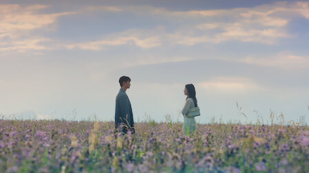

Mi serie favorita del momento: La reina de las lágrimas

La reina de las lágrimas es un k-drama que brilla no solo por su cautivadora historia, sino por la intensidad emocional que los actores principales, Kim Soo-hyun y Kim Ji-won, logran transmitir. Interpretan a una pareja atrapada en una maraña de tensiones familiares y luchas internas en un mundo donde la apariencia y el poder lo son todo. A lo largo de la serie, ambos actores consiguen llevar al espectador a través de una montaña rusa de emociones, capturando cada momento de vulnerabilidad y desafío con una autenticidad impresionante.
La actuación de Kim Ji-won, quien encarna a una mujer de fuertes convicciones atrapada en un universo de expectativas y secretos familiares, se destaca por su profundidad y capacidad de empatizar con el público. Kim Soo-hyun, por su parte, aporta una sensibilidad única a su personaje, un hombre que intenta reconciliar sus ambiciones con las presiones de su entorno, lo que crea un contraste fascinante y emotivo en pantalla.
La cinematografía complementa a la perfección el tono de la historia, con tomas cuidadosamente compuestas que reflejan la soledad y la opulencia de sus vidas. Los paisajes y escenarios juegan un papel importante, acentuando tanto el glamour como el vacío emocional que rodea a los personajes. Cada escena parece diseñada para transmitir una atmósfera melancólica y elegante, haciendo de La reina de las lágrimas una experiencia visual conmovedora y memorable. La serie invita a explorar los rincones más oscuros de la familia y el poder, ofreciendo un retrato fascinante de la lucha humana entre el deber y el deseo de libertad.
(Imágenes jpg o png)
Mi serie entrañable favorita: Anne with an E
"Anne with an E" es una serie que, desde el primer episodio, toca el corazón con su mezcla de inocencia, valentía y sensibilidad. Basada en la clásica novela Anne of Green Gables de Lucy Maud Montgomery, sigue la historia de Anne Shirley, una niña huérfana que, tras una vida de maltratos y dificultades, finalmente encuentra un hogar con los hermanos Cuthbert, en la tranquila y hermosa isla de Avonlea. Sin embargo, la llegada de Anne no es precisamente lo que ellos esperaban: es una chica peculiar, con una imaginación desbordante y un espíritu que no se ajusta a las normas de su época.
Lo que me encanta de esta serie es que toma temas clásicos, como la búsqueda de identidad y el sentido de pertenencia, y los aborda con una sensibilidad moderna. Anne no solo debe encontrar su lugar en el mundo, sino también lidiar con prejuicios, problemas de género y el trauma de su pasado, y lo hace con una mezcla de optimismo, vulnerabilidad y coraje que me resulta muy inspiradora. Las situaciones que enfrenta y su manera de ver el mundo siempre me dejan reflexionando sobre cosas tan simples como la importancia de la amabilidad o tan complejas como el papel de las mujeres en la sociedad.
Además, la cinematografía es bellísima. Cada escena en Avonlea parece sacada de un cuento: prados verdes, cielos despejados, amaneceres y la imponente belleza natural que acompaña perfectamente la historia de Anne. Los personajes secundarios, como los Cuthbert, Gilbert Blythe y Diana Barry, también tienen su propia profundidad y crecimiento, lo que hace que todo el universo de la serie se sienta real y lleno de matices.
En resumen, Anne with an E es una serie que recomiendo completamente. Es un recordatorio de que la esperanza y el amor propio pueden surgir incluso en las circunstancias más duras, y que la imaginación y la bondad pueden ser herramientas poderosas para cambiar el mundo, o al menos, nuestro pequeño rincón en él.
(Imágenes gif)
La serie estrella: Vincenzo
 Vincenzo es un k-drama electrizante que sigue a Vincenzo Cassano (Song Joong-ki), un consigliere de la mafia italiana que regresa a Corea para recuperar un tesoro escondido. Su misión se complica cuando debe enfrentarse a Babel Group, una compañía liderada por el despiadado Jang Han-seok (Ok Taec-yeon), cuyo carisma y crueldad hacen de él un antagonista inolvidable. El protagonista, interpretado por Song Joong-ki, combina astucia y dureza en una lucha por justicia junto a Hong Cha-young (Jeon Yeo-been), una abogada igual de ingeniosa. La química entre ambos añade ligereza en medio del suspenso y la brutalidad de sus enemigos, y cada interacción en pantalla aumenta la tensión y el atractivo de la trama.
Vincenzo es un k-drama electrizante que sigue a Vincenzo Cassano (Song Joong-ki), un consigliere de la mafia italiana que regresa a Corea para recuperar un tesoro escondido. Su misión se complica cuando debe enfrentarse a Babel Group, una compañía liderada por el despiadado Jang Han-seok (Ok Taec-yeon), cuyo carisma y crueldad hacen de él un antagonista inolvidable. El protagonista, interpretado por Song Joong-ki, combina astucia y dureza en una lucha por justicia junto a Hong Cha-young (Jeon Yeo-been), una abogada igual de ingeniosa. La química entre ambos añade ligereza en medio del suspenso y la brutalidad de sus enemigos, y cada interacción en pantalla aumenta la tensión y el atractivo de la trama.
La actuación de Taec-yeon como Han-seok es especialmente fascinante: con cada sonrisa inquietante y cada acción psicopática, logra matizar al villano, creando un personaje impredecible y perturbador que roba escenas. Han-seok es un personaje que parece disfrutar del caos que provoca, y la actuación de Taec-yeon resalta cada uno de sus matices oscuros. A lo largo de la serie, este personaje va transformándose de una presencia intrigante a un villano que, a pesar de sus brutalidades, resulta fascinante. Su crueldad, combinada con un sentido del humor retorcido, da lugar a momentos inquietantes y electrizantes, haciendo que cada escena en la que aparece se vuelva una montaña rusa emocional para el espectador. A nivel de caracterización, Han-seok exuda un aire de invulnerabilidad que hace aún más inquietante su personalidad impredecible y sus decisiones impulsivas. La química entre Taec-yeon y Song Joong-ki, quien interpreta a Vincenzo, aporta un contraste muy marcado, y sus interacciones suben aún más la tensión. La complejidad con la que Taec-yeon construye el personaje lo convierte en un antagonista icónico y memorable, alguien que llega a dejar una huella en el espectador al mismo nivel que el protagonista.
La actuación de Song Joong-ki da vida a un protagonista encantador, meticuloso y brutal cuando es necesario, mientras que la química entre él y Jeon Yeo-been inyecta a la serie energía y humor. Entre la narrativa de venganza y la complejidad de los personajes, Vincenzo se convierte en una serie entretenida y poderosa sobre el combate de los débiles contra los fuertes. La serie combina comedia negra, acción y romance, manteniendo un ritmo que nunca decae, mientras explora temas de venganza y corrupción con una cinematografía que resalta tanto la oscuridad de la mafia como los paisajes urbanos de Seúl. Vincenzo es una obra emocionante que sube las apuestas con cada episodio, convirtiéndose en una montaña rusa de emociones y giros que cautivan hasta el final.
(Imagen con vínculo y fondo con imagen)
Filtros
Imágenes con filtros de CSS aplicadas a mi villano favorito. ¿Es raro que me guste más que el protagonista?